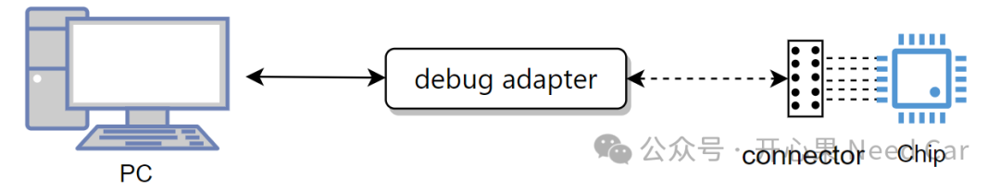
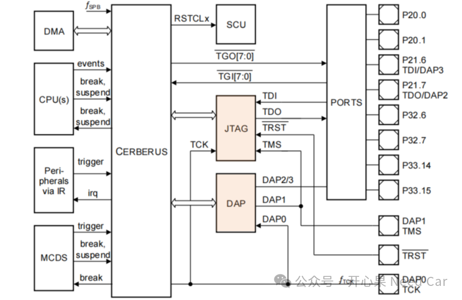
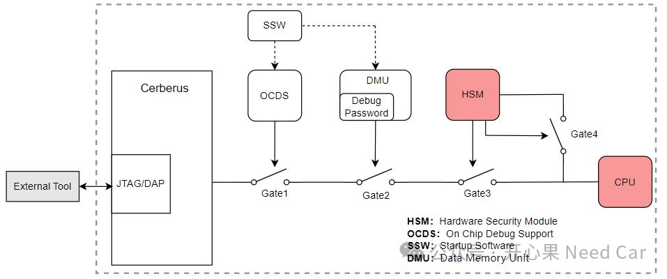
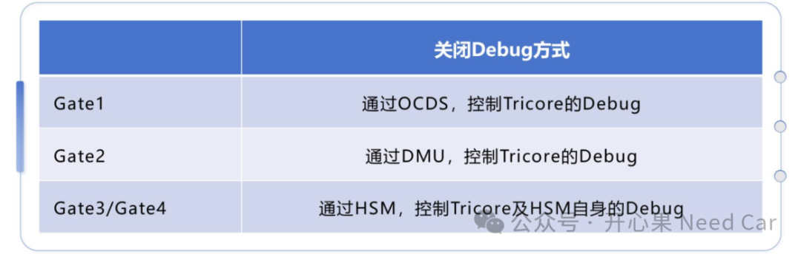
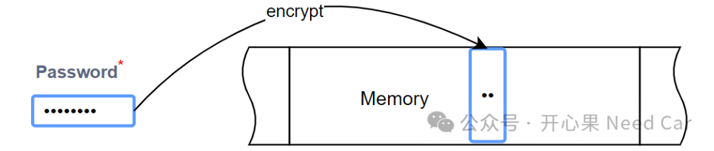
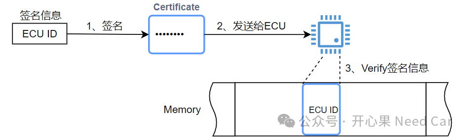
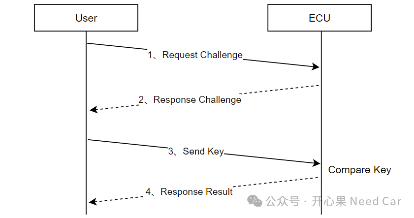
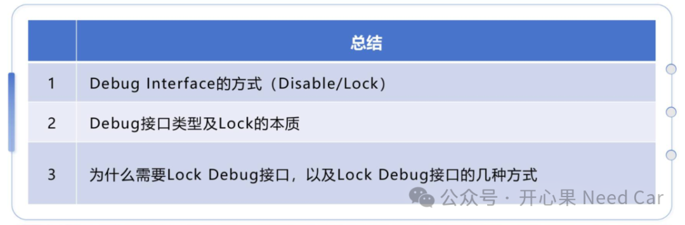

开心果 Need Car · 2024-08-09T06:36:00+08:00 · 微信原文
1、Debug Interface的处理方式
对于Debug Interface处理，车辆下线（EOL，End of Line）时的处理方式，主要分为两种：Disable和Lock。
Disable：简单理解，一旦Disable（禁用）调试接口，调试器无法再通过调试口访问芯片。
Lock：如果对Debug Interface进行上锁处理，则意味着Debug Interface还可以通过unlock的方式，重新使用。
2、调试接口
嵌入式软件开发过程中，调试的方式多种多样，使用调试器时，最常用的就是JTAG (Joint Test Action Group)接口和DAP (Debug Adapter Protocol)接口。当然，还可以使用串口（Serial Port）或者其他调试协议。调试连接示意如下：


提示：DAP和JTAG对应的Pin脚数量和间距会有所不同，因此，在PCB板设计中，两者的连接器（Connector）不一样，使用时需要区分。
（一）Lock什么
如上，我们一直在讨论Debug Interface，可是，Debug Interface到底是在锁存什么呢？答：锁存CPU。我们所讨论的关闭调试，本质是关闭对芯片内部CPU资源的访问，示意如下：


3、为什么Lock调试接口？
既然直接Disable调试接口最安全，为什么还要使用lock方式，锁住调试接口？我们知道，汽车是一个复杂的系统性工程，一辆汽车，几十到上百的控制器，让这些控制器完全按照理想状态工作，完全不出问题，很难做到。所以，当车辆出现问题，需要更高精度数据分析问题时，通过UDS (Unified Diagnostic Services)或者标定方式，往往无法获取高精度数据或者足够数据量，此时，就需要借助Debug Interface。所以，整车中，并不是每一个控制器都会Disable调试口。
4、Unlock调试接口的几种方式
使用password方式解锁调试口比较简单，即：输入正确的password，就可以正常使用调试口，这有点类似账号登录。但是，这里需要考虑password存放在哪里，以及如何存储的问题。
一般来说，使用password机制解锁调试口，可以将对应的password存放在ECU内部，但是，为了password的安全，需要设置password的长度尽可能长一些，eg：256bit。同时，password不能明文存储，需要加密后存储，每次使用时，先解密，再使用。password加密处理示意如下：

使用调试证书（debug certificate）方式对使用调试接口的访问者进行验证，只有确保使用者的身份合法后，方可使能调试接口。既然使用调试证书，就需要对特定信息签名（sign），以便于ECU可以验签（verify）。选择什么信息进行签名呢？一般来说，需要签名的信息，只有证书发布者和证书接收的ECU知道（ECU内部提前存储），eg：ECU ID等。
调试证书解锁调试接口的方式如下：


在实际的工程应用中，该方案比较常见。
综上，本文讨论了如下几点：

往期精彩回顾